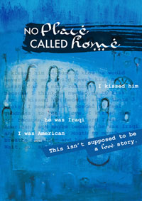

past performanceNo Place Called Home Written and Performed by Kim Schultz Directed by Sarah Cameron Sunde Music by Amikaeyla Gaston |
synopsis:Omar? O my... The playwright Kim Schultz traveled to the middle east to interview Iraqi refugees and hear their stories. Falling in love with one of them was never part of her plan, but Omar changed all that. No Place Called Home is that unexpected true story of an American woman and an Iraqi man, a story about one refugee out of 4 million, a story that isn't supposed to be a love story. In the fall of 2009, Intersections International brought a delegation of American artists to Jordan, Lebanon and Syria to interview Iraqi refugees. Their mission was to witness firsthand the heartbreaking and often tragic personal stories of Iraqi refugees living in exile. The hope is to harness the power of the arts to focus attention on the Iraqi refugee crisis. Upon returning to the US, they created art inspired by the experience of which No Place Called Home is the centerpiece. "As a refugee myself, I gave up to the fact that no one can hold the complexity of this crisis, it's so complicated and different. Yet I as wrong. I was captured from the first word until the end!"--Ibrahim, resettled Iraqi refugee after seeing the play. For more information, visit www.noplacecalledhome.com |
showtimes:October 6-10 tickets:Ticket sales are closed. |
upcoming performances |
|||
 |
|||
| EVQ Film Festival 2018 August 20-25 |
|||
performance archives |
|||
| 2018 | 2017 | 2016 | 2015 |
| 2014 | 2013 | 2012 | 2011 |
| 2010 | 2009 | 2008 | 2007 |